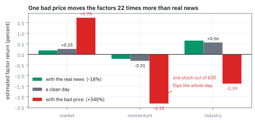
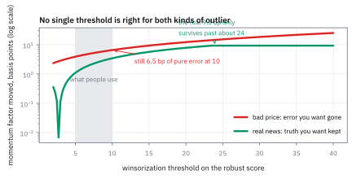
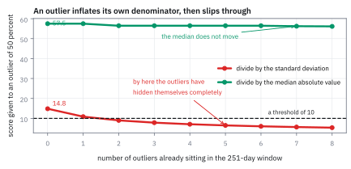
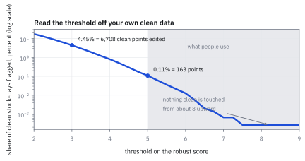

27.5 Winsorization: Which Outliers to Keep
ค่าประหลาดสองชนิดที่หน้าตาเหมือนกัน แต่ต้องปฏิบัติตรงข้ามกัน
วันนี้มีหุ้นตัวหนึ่งในจักรวาล 600 ตัวขึ้นไป 340% และอีกตัวลง 18% ทั้งคู่ดูเป็นค่าประหลาด ควรตัดทิ้งทั้งคู่ไหม?
เฉลย: ตัดตัวแรก เก็บตัวที่สอง ตัวแรกคือราคาที่ยังไม่ปรับการรวมหุ้น ซึ่งถ้าปล่อยไว้จะบิด factor return ของทั้งวันไป 202 จุดพื้นฐาน ส่วนตัวที่สองคือข่าวผลประกอบการจริง ซึ่งขยับ factor return แค่ 9 จุดพื้นฐาน และนั่นคือการขยับที่ ถูกต้อง ถ้าตัดมันทิ้งด้วย จะเหลือแค่ 3 จุด ซึ่งแปลว่าโยนข้อมูลจริงทิ้งไปสองในสาม
ศัพท์ที่ใช้ในหัวข้อนี้
- outlier
- ค่าที่ห่างจากปกติมาก ใช้เป็นคำกลางที่ยังไม่ตัดสินว่าเป็นข้อผิดพลาดหรือของจริง
- winsorization
- การดึงค่าที่เกินเกณฑ์ให้กลับมาอยู่ที่เกณฑ์พอดี แทนที่จะลบทิ้ง ใช้เมื่อไม่อยากเสียจำนวนข้อมูล
- robust z-score
- ขนาดของค่าหารด้วยค่ากลางของขนาดในอดีต ใช้แทน z-score ปกติเพราะตัวหารไม่ถูกค่าประหลาดดึง
- median absolute value
- ค่ากลางของขนาด ใช้เป็นมาตรวัดความเหวี่ยงที่ทนต่อค่าประหลาด
- corporate action
- เหตุการณ์ที่บริษัททำกับหุ้นตัวเอง เช่นแตกหุ้นหรือรวมหุ้น ใช้เป็นสาเหตุอันดับหนึ่งของข้อมูลราคาที่ผิด
- reverse split
- การรวมหุ้นหลายหุ้นเป็นหุ้นเดียว ทำให้ราคาต่อหุ้นกระโดดขึ้นโดยมูลค่าไม่เปลี่ยน ใช้เป็นตัวอย่างในหัวข้อนี้
- delisting
- การถอดหุ้นออกจากตลาด มักตามหลังการขาดทุนหนัก ใช้เป็นแหล่งของผลตอบแทนสุดโต่งที่เป็นของจริง
- microcap
- หุ้นที่มูลค่าตลาดเล็กมากและซื้อขายน้อย ใช้เป็นกลุ่มที่ควรตัดออกจากจักรวาลตั้งแต่แรก
- estimation universe
- ชุดหุ้นที่ใช้ประมาณแบบจำลอง ใช้เป็นด่านแรกที่กรองปัญหาก่อนจะถึงขั้นตอนจัดการค่าประหลาด
- data vendor
- ผู้ขายข้อมูลราคาและคุณสมบัติบริษัท ใช้เป็นแหล่งที่ต้องตรวจสอบคุณภาพเสมอ
- factor-mimicking portfolio (FMP)
- พอร์ตที่ผลตอบแทนเท่ากับ factor return ที่ประมาณได้ ใช้เป็นเหตุผลว่าทำไมการตัดค่าจริงทิ้งถึงผิด
- audit trail
- บันทึกว่าข้อมูลตัวไหนถูกแก้ เมื่อไร และเพราะอะไร ใช้เป็นสิ่งที่ต้องมีทุกครั้งที่แตะข้อมูล
สัญลักษณ์ที่ใช้ในหัวข้อนี้
| สัญลักษณ์ | ความหมาย | หน่วย |
|---|---|---|
| $r_{i,t}$ | ผลตอบแทนของหุ้น i ในวัน t | decimal |
| $d_{i,t}$ | robust z-score ของค่านั้น | unitless |
| $d_{\max}$ | เกณฑ์ที่เกินแล้วถือว่าเป็นค่าประหลาด | unitless |
| $\hat{\mathbf f}_t$ | factor return ที่ประมาณได้ในวันนั้น | decimal |
| $s_i$ | ค่ากลางของขนาด log return ในหน้าต่างย้อนหลัง | decimal |
| $T$ | ความยาวของหน้าต่างย้อนหลัง | วันทำการ |
| $n$ | จำนวนหุ้นในจักรวาล | จำนวน |
ที่มาที่ไป: ค่าประหลาดคือของดีหรือของเสีย
ทุกชุดข้อมูลผลตอบแทนมีค่าประหลาด และมีคนจำนวนมากที่เขียนบรรทัดเดียวว่า “ตัดค่าที่เกินสี่เท่าของความเหวี่ยงทิ้ง” แล้วเดินหน้าต่อ นั่นเป็นบรรทัดที่อันตรายมาก
เหตุผลอยู่ในหัวข้อ 27.1 factor return ที่ประมาณได้คือ ผลตอบแทนจริงของพอร์ตที่ซื้อขายได้ ถ้าตัดผลตอบแทนของหุ้นตัวหนึ่งที่ร่วงจริง 18% ทิ้ง สิ่งที่รายงานออกมาคือผลตอบแทนของพอร์ตที่ไม่มีอยู่จริง กองทุนที่ถือพอร์ตนั้นเจ็บเต็ม 18% ส่วนรายงานบอกว่าเจ็บ 8%
แต่ก็ตัดทิ้งไม่ได้ทั้งหมดเช่นกัน ถ้าปล่อยให้ราคาที่ยังไม่ปรับการรวมหุ้นเข้าไปในสมการ ทั้งวันจะพัง หัวข้อนี้จึงเป็นเรื่องการแยกสองอย่างนี้ออกจากกัน
โจทย์: วันหนึ่งที่มีค่าประหลาดสองแบบ
โจทย์ให้อะไรมาบ้าง จักรวาล 600 หุ้นกับ factor สามตัวคือ market momentum และ industry หนึ่งตัวที่ครอบคลุม 18% ของหุ้น ในวันปกติ factor return คือ market +0.2538% momentum −0.3085% industry +0.5601% และหุ้นตัวที่เจ็ดมีค่ากลางของขนาด log return ย้อนหลังเท่ากับ 1.0175% ต่อวัน
วันนี้เกิดสองสถานการณ์ที่จะพิจารณาทีละอัน สถานการณ์แรกหุ้นตัวที่เจ็ดร่วง 18% จากข่าวผลประกอบการจริง สถานการณ์ที่สองหุ้นตัวเดียวกันขึ้น 340% เพราะผู้ให้บริการข้อมูลยังไม่ได้ปรับการรวมหุ้น
ต้องหาสี่อย่าง คะแนนความประหลาดของแต่ละกรณี ผลกระทบต่อ factor return ผลของการดึงค่าลงมาที่เกณฑ์ และเกณฑ์ที่ควรใช้จริง
ขั้นที่ 1 — วัดความประหลาดด้วยตัวหารที่ทนทาน
นี่คือนิยามของคะแนน ใช้ค่ากลางของขนาดในอดีตเป็นตัวหาร ไม่ใช่ความเหวี่ยง เหตุผลอยู่ในขั้นที่ 4 แต่สรุปสั้น ๆ คือความเหวี่ยงถูกค่าประหลาดดึงจนตัวมันเองหลบรอด
คะแนนสองค่านี้ต่างกัน 7.5 เท่า ซึ่งเป็นข้อมูลที่ใช้ได้ทันที ค่า 23.5 อยู่ในระดับที่เกิดขึ้นจริงได้กับข่าวใหญ่ ส่วน 175 ไม่ใช่ตัวเลขที่ตลาดสร้างได้ในหุ้นที่มีสภาพคล่อง
เหตุผลที่ใช้ logarithm ไม่ใช่ผลตอบแทนตรง ๆ คือความสมมาตร ผลตอบแทน −50% กับ +100% คือการเคลื่อนไหวขนาดเท่ากันในทิศตรงข้าม ใน logarithm ทั้งคู่มีขนาด 0.693 แต่ในผลตอบแทนดิบตัวหนึ่งเป็นสองเท่าของอีกตัว
ขั้นที่ 2 — สองกรณี ผลต่างกัน 22 เท่า
รัน cross-sectional regression ของหัวข้อ 27.1 สามครั้ง ครั้งแรกกับข้อมูลปกติ ครั้งที่สองกับข่าวจริง ครั้งที่สามกับข้อมูลที่ผิด แล้วดูว่า factor return ขยับไปเท่าไรในแต่ละกรณี
ตัวเลข −201.89 จุดพื้นฐานคือหายนะ momentum factor ที่ควรเป็น −0.31% กลายเป็น −2.33% หุ้นตัวเดียวจาก 600 ตัวพลิกทั้งวัน และถ้าปล่อยไว้ในประวัติข้อมูล มันจะโผล่ในทุกการทดสอบย้อนหลังที่คร่อมวันนั้น
ตัวเลข +9.27 จุดพื้นฐานจากข่าวจริงเป็นคนละเรื่อง มันเล็กพอที่จะไม่พังอะไร และมันคือ ความจริง ที่ควรอยู่ในข้อมูล ถ้าหุ้นที่มี momentum สูงร่วงจริง momentum factor ก็ควรลง
ตรวจเองใน 10 วินาที ผลกระทบควรแปรตามขนาดของ log return โดยประมาณ 1.4816 หารด้วย 0.19845 ได้ 7.5 เท่า แต่ผลกระทบต่อ momentum ต่างกัน 201.89 หารด้วย 9.27 ได้ 21.8 เท่า ที่มากกว่าเพราะข้อมูลผิดยังดันน้ำหนักของหุ้นตัวนั้นในสมการด้วย
Figure 27.5a — หุ้นตัวเดียวจาก 600 ตัว พลิก factor return ทั้งวัน

สาม factor สามกลุ่มแท่ง แท่งกลางคือวันปกติ แท่งซ้ายคือหลังใส่ข่าวจริงที่ −18% ซึ่งขยับนิดเดียว แท่งขวาคือหลังใส่ข้อมูลผิดที่ +340% ซึ่งพลิก momentum จาก −0.31% เป็น −2.33% และพลิกเครื่องหมายของ industry ด้วย
แล้วเอาไปใช้ทำอะไรได้จริงบ้าง
ถ้าเลือกได้ว่าจะแก้ที่ไหน แก้ที่จักรวาลก่อนดีที่สุด แหล่งของค่าประหลาดสามในสี่แหล่งหายไปเองถ้าเลือกจักรวาลให้ดี คือราคาที่หลุดมาตัวเดียวในหุ้นสภาพคล่องดีแก้ได้ด้วยการดูราคาทั้งช่วงไม่ใช่ราคาสุดท้าย หุ้นเล็กที่ซื้อขายน้อยกับหุ้นที่กำลังถูกถอดจากตลาดแก้ได้ด้วยการไม่เอามันเข้าจักรวาลตั้งแต่แรก
เหลือแหล่งเดียวที่แก้ด้วยจักรวาลไม่ได้ คือข่าวจริงที่ใหญ่ และนั่นคือแหล่งที่ ไม่ควร แตะเลย บนโต๊ะจริงจึงมีกฎสองข้อ ข้อแรกคือรายงานทุกครั้งที่ระบบแก้ข้อมูล พร้อมชื่อหุ้น วันที่ และค่าเดิม แล้วอ่านมันทีละบรรทัด ข้อที่สองคือจักรวาลต้องมีแต่หุ้นที่สภาพคล่องพอและซื้อขายได้จริง
ขั้นที่ 3 — ดึงลงมาที่เกณฑ์แล้วเกิดอะไรขึ้น
ถ้าตั้งเกณฑ์ที่ 10 แล้วดึงค่าที่เกินให้กลับมาอยู่ที่เกณฑ์พอดี ทั้งสองกรณีโดนดึง เพราะทั้งคู่มีคะแนนเกิน 10 ดูว่าผลออกมาเป็นอย่างไร
นี่คือแก่นของการแลกเปลี่ยน เกณฑ์เดียวกันช่วยกรณีหนึ่งได้ 97% และทำลายอีกกรณีไป 63% เพราะมันไม่รู้ว่าค่าไหนจริงค่าไหนผิด มันรู้แค่ว่าค่าไหนใหญ่
ข้อสรุปที่ตามมาคือ การดึงค่าลงไม่ใช่ทางแก้ มันคือตาข่ายกันตายชั้นสุดท้าย ทางแก้จริงคือหาสาเหตุ ถ้าเป็นการรวมหุ้นที่ยังไม่ปรับ ต้องปรับให้ถูกแล้วใช้ค่าจริง ไม่ใช่ดึงลงมาที่ 8.8%
และถ้าต้องเลือกเกณฑ์ ควรเลือกให้หลวมพอที่ข่าวจริงรอด เพราะความเสียหายจากการทิ้งของจริงกระจายอยู่ในทุกวันและมองไม่เห็น ขณะที่ความเสียหายจากข้อมูลผิดกระจุกอยู่ไม่กี่วันและหาเจอได้ถ้าตรวจรายงาน
Figure 27.5b — เกณฑ์เดียวกันช่วยกรณีหนึ่ง และทำลายอีกกรณี

แกนนอนคือเกณฑ์ที่ใช้ดึงค่าลง แกนตั้งคือขนาดความผิดของ momentum factor ที่เหลืออยู่ เส้นบนคือกรณีข้อมูลผิด ซึ่งต้องการเกณฑ์เข้มถึงจะหาย เส้นล่างคือกรณีข่าวจริง ซึ่งความ “ผิด” ของมันคือความจริงที่เราอยากเก็บไว้ แถบเทาคือช่วง 5 ถึง 10 ที่คนทำงานใช้
ขั้นที่ 4 — ทำไมตัวหารต้องเป็นค่ากลาง ไม่ใช่ความเหวี่ยง
ลองทั้งสองตัวหารกับหน้าต่างที่มีค่าปกติ 250 วันที่ความเหวี่ยง 1.2% แล้วมีค่าประหลาดหนึ่งค่าที่ 50%
ค่าประหลาดค่าเดียวดันความเหวี่ยงของหน้าต่างจาก 1.2% เป็น 3.36% ซึ่งเกือบสามเท่า แล้วตัวมันเองก็หารด้วยตัวเลขที่มันเป็นคนดันขึ้นมา ผลคือมันดูประหลาดน้อยกว่าที่เป็นจริงถึงสี่เท่า
ค่ากลางของขนาดไม่ขยับเลย เพราะค่าเดียวใน 251 ค่าเปลี่ยนตำแหน่งกลางไม่ได้ นั่นคือความหมายของคำว่าทนทาน
ผลในทางปฏิบัติร้ายแรง ถ้าใช้ความเหวี่ยงกับเกณฑ์ที่ 10 ค่าประหลาดที่ 50% จะรอดออกมาได้สบาย เพราะ z ของมันแค่ 14.9 แต่ถ้ามีค่าประหลาดสองค่าในหน้าต่าง ตัวหารจะพองอีกและทั้งคู่จะรอด
Figure 27.5c — ค่าประหลาดดันตัวหารของตัวเองขึ้น แล้วหลบรอด

แกนนอนคือจำนวนค่าประหลาดที่อยู่ในหน้าต่างย้อนหลัง แกนตั้งคือคะแนนที่แต่ละวิธีให้กับค่าประหลาดค่าหนึ่ง เส้นที่ดิ่งลงคือวิธีที่ใช้ความเหวี่ยง ซึ่งพอมีค่าประหลาดหลายค่าก็มองไม่เห็นเลย เส้นที่แบนคือวิธีที่ใช้ค่ากลาง ซึ่งไม่สนใจว่ามีกี่ค่า
ขั้นที่ 5 — เกณฑ์ควรอยู่ที่เท่าไร
วิธีเลือกที่ตรงไปตรงมาคือ รันคะแนนกับข้อมูลที่รู้ว่าสะอาด แล้วดูว่าแต่ละเกณฑ์จะจับผิดกี่เปอร์เซ็นต์ ข้อมูลในโจทย์มี 600 หุ้นคูณ 251 วันเท่ากับ 150,600 จุด
ตัวเลขบอกเองว่าเกณฑ์ควรอยู่ที่ไหน ที่ 3 จะแก้ข้อมูลเกือบเจ็ดพันจุดต่อปีทั้งที่มันสะอาดหมด ซึ่งเป็นการทำลายข้อมูลล้วน ๆ ที่ 8 ขึ้นไปไม่แตะข้อมูลสะอาดเลยสักจุด
นั่นตรงกับช่วง 5 ถึง 10 ที่คนทำงานลงเอยด้วยการลองผิดลองถูกมาหลายสิบปี และเป็นเรื่องน่ายินดีอีกครั้งที่ทฤษฎีกับนิ้วหัวแม่มือชี้ไปทางเดียวกัน
ข้อควรจำคือค่านี้ไม่ใช่ค่าสากล มันขึ้นกับสินทรัพย์และภูมิภาค หุ้นตลาดเกิดใหม่มีหางหนากว่าและต้องใช้เกณฑ์หลวมกว่า วิธีที่ถูกคือรันตารางข้างบนกับข้อมูลของตัวเองเสมอ ไม่ใช่ลอกเลข 10 มา
คำตอบของโจทย์ทั้งหมดคือสี่ข้อ คะแนนของข่าวจริงคือ 23.5 และของข้อมูลผิดคือ 175.2 ผลต่อ momentum factor คือ 9.27 จุดพื้นฐานกับ 201.89 จุดพื้นฐาน การดึงลงที่เกณฑ์ 10 กำจัดความผิดได้ 97% แต่ทำลายของจริงไป 63% และเกณฑ์ที่ควรใช้จริงคือ 8 ถึง 10 เพราะต่ำกว่านั้นเริ่มแตะข้อมูลที่สะอาด
Figure 27.5d — ที่เกณฑ์ไหนจึงเลิกทำร้ายข้อมูลที่สะอาด

แกนนอนคือเกณฑ์ แกนตั้งคือสัดส่วนของข้อมูลสะอาดที่ถูกแก้โดยไม่จำเป็น บนสเกล logarithm ที่เกณฑ์ 3 แก้ไป 4.45% ที่ 5 เหลือ 0.11% และตั้งแต่ 8 ขึ้นไปเป็นศูนย์ แถบเทาคือช่วงที่คนทำงานใช้ ซึ่งอยู่พอดีตรงที่เส้นแตะพื้น
กับดัก: ตัดค่าจริงทิ้งเงียบ ๆ และคำนวณตัวหารจากข้อมูลวันเดียวกัน
กับดักแรกคือแก้ข้อมูลโดยไม่บันทึกและไม่มีใครอ่าน ระบบที่ตัดค่าประหลาดอัตโนมัติวันละไม่กี่จุดจะสะสมการแก้เป็นพันจุดต่อปี และในนั้นมีทั้งข้อผิดพลาดจริงกับข่าวจริงปนกัน ถ้าไม่มีใครอ่านรายการนั้น จะไม่มีทางรู้ว่าอัตราส่วนเป็นเท่าไร กฎคือต้องรายงานทุกจุดที่แก้ พร้อมชื่อหุ้น วันที่ ค่าเดิม และค่าใหม่ แล้วมีคนอ่านจริง
กับดักที่สองคือคำนวณค่ากลางที่เป็นตัวหารจากหน้าต่างที่รวมวันนี้เข้าไปด้วย ถ้าทำแบบนั้น วันที่ตลาดทั้งตลาดเหวี่ยงแรง ตัวหารจะโตตามและค่าประหลาดจะรอดพอดีในวันที่มันอันตรายที่สุด ตัวหารต้องมาจากอดีตเท่านั้น
กับดักที่สามคือใช้เกณฑ์เดียวกับทุกภูมิภาคและทุกสินทรัพย์ ตารางในขั้นที่ 5 ต้องรันใหม่ทุกครั้งที่เพิ่มตลาดใหม่ เพราะหางของ distribution ต่างกันมาก และเกณฑ์ที่เหมาะกับหุ้นสหรัฐฯ อาจตัดข้อมูลจริงของตลาดอื่นทิ้งเป็นจำนวนมาก
ข้อจำกัด: สี่แหล่งของค่าประหลาด และวิธีที่ถูกกับแต่ละแหล่ง
| แหล่ง | หน้าตา | วิธีที่ถูก | วิธีที่ผิด |
|---|---|---|---|
| corporate action ที่ยังไม่ปรับ | คะแนนสูงมาก เช่น 175 | ปรับราคาให้ถูกแล้วใช้ค่าจริง | ดึงลงมาที่เกณฑ์ ซึ่งยังเหลือความผิด 3% |
| ราคาหลุดตัวเดียวในหุ้นสภาพคล่องดี | คะแนนสูง และหายไปในนาทีถัดมา | ดูราคาทั้งช่วง ไม่ใช่ราคาสุดท้าย | ใช้ราคาปิดของช่วงโดยไม่ตรวจ |
| หุ้นเล็กและหุ้นที่กำลังถูกถอด | คะแนนสูงบ่อย ๆ ทุกสัปดาห์ | ไม่เอาเข้าจักรวาลตั้งแต่แรก | เอาเข้ามาแล้วค่อยตัดค่าทิ้งทีละวัน |
| ข่าวจริงที่ใหญ่ | คะแนน 15 ถึง 30 | เก็บไว้ทั้งหมด ไม่ต้องแตะ | ตัดทิ้ง ซึ่งทำให้รายงานผลตอบแทนที่พอร์ตไม่ได้รับ |
สามแถวแรกแก้ได้ที่ต้นทางทั้งหมด ซึ่งแปลว่าถ้าทำงานต้นทางดี การดึงค่าลงจะแทบไม่ทำงานเลย และนั่นคือสัญญาณว่าระบบสุขภาพดี ไม่ใช่สัญญาณว่าตาข่ายไม่จำเป็น
ตรวจทุกตัวเลขของหัวข้อนี้
import numpy as np
rng = np.random.default_rng(37)
n, T = 600, 251
B = np.zeros((n, 3)); B[:, 0] = 1
B[:, 1] = rng.normal(0, 1, n).round(2)
B[:, 2] = (rng.random(n) < 0.18).astype(float)
se = rng.uniform(0.012, 0.030, n)
r = B @ np.array([0.0040, -0.0025, 0.0060]) + rng.standard_normal(n) * se
W = np.diag(1 / se ** 2)
fit = lambda x: np.linalg.solve(B.T @ W @ B, B.T @ W @ x)
base = fit(r)
assert np.allclose(base * 100, [0.2538, -0.3085, 0.5601], atol=5e-5)
hist = rng.standard_normal((n, T)) * se[:, None]
scale = np.median(np.abs(np.log1p(hist)), axis=1)
k = 7
assert abs(scale[k] * 100 - 1.0175) < 5e-4
# step 1: the two scores
for shock, want in ((-0.18, 23.5), (3.40, 175.2)):
assert abs(abs(np.log1p(shock)) / scale[k] - want) < 0.1
assert abs(abs(np.log1p(-0.50)) - abs(np.log1p(1.00))) < 1e-15 # logs are symmetric
# step 2: what each does to the factor returns
def shift(shock):
x = r.copy(); x[k] = shock
return (fit(x) - base) * 1e4
real, bad = shift(-0.18), shift(3.40)
assert np.allclose(real, [-6.79, 9.27, 8.94], atol=0.02)
assert np.allclose(bad, [147.81, -201.89, -194.59], atol=0.05)
assert abs(bad[1] / real[1]) > 20 # 22 times the damage
# step 3: capping at d = 10
def capped(shock):
cap = np.expm1(np.sign(shock) * 10 * scale[k])
x = r.copy(); x[k] = cap
return (fit(x) - base) * 1e4, cap
cb, capb = capped(3.40)
cr, capr = capped(-0.18)
assert abs(capb - 0.0882) < 5e-4 and abs(capr + 0.0811) < 5e-4
assert np.allclose(cb, [4.80, -6.55, -6.31], atol=0.05)
assert np.allclose(cr, [-2.52, 3.44, 3.31], atol=0.05)
assert abs(1 - abs(cb[1] / bad[1]) - 0.968) < 5e-3 # 97% of the damage removed
assert abs(1 - abs(cr[1] / real[1]) - 0.629) < 5e-3 # 63% of the truth thrown away
# step 4: why the median, not the standard deviation
x = np.concatenate([rng.standard_normal(250) * 0.012, [0.50]])
assert abs(x.std() - 0.0336) < 5e-4
assert abs(np.median(np.abs(x)) - 0.0079) < 5e-4
assert abs(0.50 / x.std() - 14.9) < 0.1
assert abs(0.50 / np.median(np.abs(x)) - 62.9) < 0.3
assert (0.50 / np.median(np.abs(x))) / (0.50 / x.std()) > 4
clean = np.random.default_rng(2).standard_normal(250) * 0.012
assert abs(np.median(np.abs(np.concatenate([clean, [0.50]]))) /
np.median(np.abs(clean)) - 1) < 0.02 # the median barely notices
# step 5: how often a clean day gets flagged
z = np.abs(np.log1p(hist)) / scale[:, None]
assert n * T == 150_600
assert abs((z > 3).mean() * 100 - 4.4542) < 5e-3
assert abs((z > 5).mean() * 100 - 0.1082) < 5e-3
assert (z > 8).sum() == 0 and (z > 10).sum() == 0
assert (z > 3).sum() == 6708 and (z > 5).sum() == 163บล็อกของขั้นที่ 3 วัดทั้งสองด้านของการแลกเปลี่ยนด้วยตัวเลขเดียวกัน เกณฑ์ที่ 10 กำจัดความเสียหายจากข้อมูลผิดไป 96.8% และทำลายข้อมูลจริงไป 62.9% ซึ่งเป็นเหตุผลที่การดึงค่าลงเป็นตาข่ายชั้นสุดท้าย ไม่ใช่ทางแก้หลัก
ก่อนไปต่อ
ห้าหัวข้อที่ผ่านมาสร้างแบบจำลองความเสี่ยงขึ้นมาทั้งตัว ตั้งแต่ regression รายวันจนถึงการจัดการข้อมูลสกปรก คำถามที่เหลือคือคำถามที่สำคัญที่สุด มันดีหรือเปล่า และรู้ได้อย่างไร สองหัวข้อสุดท้ายของบทตอบคำถามนั้น อันหนึ่งบอกว่าควรวัดอย่างไร อีกอันบอกว่ามาตรวัดที่คนใช้กันมากที่สุดใช้ไม่ได้
สรุปที่ใช้ได้จริง
- วัดความประหลาดด้วยขนาดของ log return หารด้วยค่ากลางของขนาดในอดีต ไม่ใช่หารด้วยความเหวี่ยง เพราะค่าประหลาดดันความเหวี่ยงขึ้นเองแล้วหลบรอด ในตัวอย่างนี้หลบรอดได้ 4.2 เท่า
- ข้อมูลที่ผิดจริงมีคะแนนคนละระดับกับข่าวจริง 175 เทียบกับ 23.5 และผลกระทบต่อ factor return ต่างกัน 22 เท่า คือ 202 จุดพื้นฐานเทียบกับ 9 จุด
- การดึงค่าลงที่เกณฑ์ 10 กำจัดความเสียหายจากข้อมูลผิดได้ 97% แต่ทำลายข้อมูลจริงไป 63% เกณฑ์เดียวจึงไม่มีทางถูกกับทั้งสองกรณี
- ทางแก้จริงอยู่ที่ต้นทาง ปรับ corporate action ให้ถูก ดูราคาทั้งช่วงแทนราคาสุดท้าย และเลือกจักรวาลที่ไม่มีหุ้นเล็กที่ซื้อขายน้อย สามแหล่งจากสี่แหล่งหายไปเอง
- เกณฑ์ที่เหมาะอ่านได้จากข้อมูลสะอาดของตัวเอง ที่ 3 แก้ข้อมูลดีไป 4.45% ที่ 5 เหลือ 0.11% ที่ 8 ขึ้นไปเป็นศูนย์ ซึ่งตรงกับช่วง 5 ถึง 10 ที่คนทำงานใช้